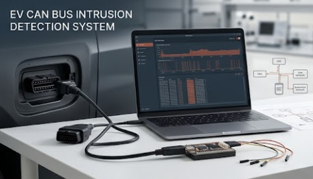

EV CAN Bus Intrusion Detection System
Designing a real-time anomaly detection framework targeting Controller Area Network (CAN) communication buses within Electric Vehicles. The system monitors packet frequencies and payload anomalies to prevent malicious frame injection attacks on critical automotive subsystems.
Key Objectives:
- Parse and inspect CAN frames for unexpected timing intervals and message IDs.
- Implement Python-based payload validation scripts for telemetry simulation.
- Document security vulnerabilities in connected vehicle diagnostic ports (OBD-II).
Python
CAN Bus Protocol
Automotive Cyber Security
Network Analysis